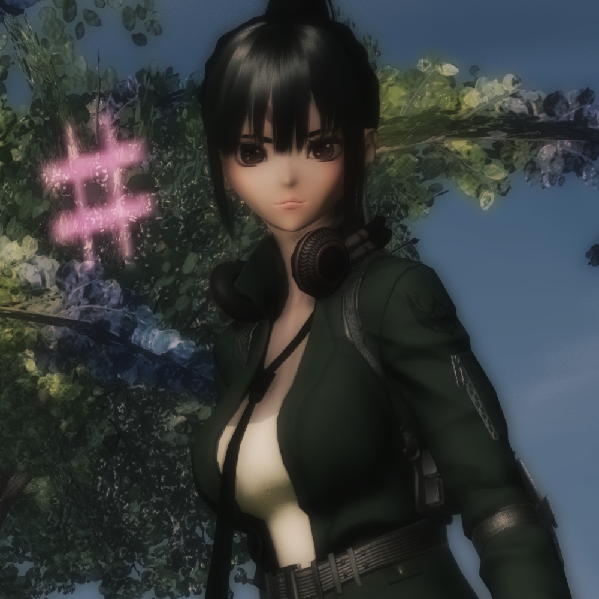

Character Page

Hope M. Sakino
- Fullname: Hope Meiko Sakino
- Nickname(s):
- Species: DNA-mutated Human
- Nationality: Japanese
- Language(s): Japanese & English
- Birthdate: 16th April 2002
- Height: 163 cm
- Weight: 45 kg
- MBTI: ESTP-A
- Interests: Blood
- Career: Assassin
- Relatives: Yuki (older sister), MayRuby (daughter), Deathmark (son) & Jake (nephew)
- Partner(s): -
Lotsa lore here!
Discography
Singles
- Lost in the Night (Prod. Zanato)
Gallery
Lotsa pics here!
Game origins
Phantasy Star Online 2